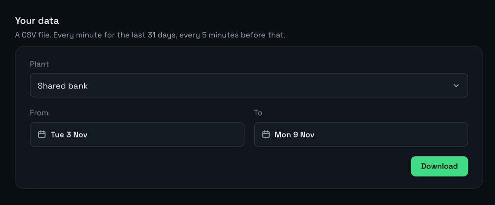

SunSynk data in Excel.
Pick any days, up to a year at a time, and download your SunSynk readings. The file opens in Excel or Google Sheets.

How to download
- Open Settings, then Account.
- Under Your data, pick the From and To days.
- Choose Download.
What’s in it
Your readings as a CSV file: every minute for the last 31 days, every 5 minutes before that. One row per reading, with these columns:
- Time. When the reading was taken.
- Solar (W). What the panels made.
- Home (W). What the house used.
- From grid (W). What came in from the grid.
- Battery charging (W) and Battery discharging (W). Power into and out of the battery.
- Battery (%). How full it was.
What owners use it for
- Checking the electricity bill against the grid you used.
- Showing your installer how the panels did.
- Keeping your own copy, in case SunSynk’s history has gaps.
Open it in Excel
Double-click the file, or drag it into Excel or Google Sheets. Each power column is in watts. To get kWh from minute rows, add up the column and divide by 60,000. For 5-minute rows, divide by 12,000.
Check your electricity bill
- Download the days your bill covers.
- Add up the From grid (W) column and turn it into kWh as above.
- Compare it with the kWh on the bill. A big gap is worth a question to the municipality or Eskom.
What else it does
- Battery time leftHow long until it reaches its reserve.
- Power cut emailsAn email when the power goes, and when it’s back.
- Watch your parents’ solarTheir system next to yours, from anywhere.
- SunSynk on a TV or tabletFull screen, for the whole house.
- Why Prince Solar HubEverything it adds to the SunSynk app.
Questions
How far back can I go?
As far as your history: the 60 days before you joined, then every day since on Home and Family.
Which plans have it?
Home and Family, and every plan for the first 7 days after you add your plant.
See your SunSynk live.
Free for one plant. Nothing to install.
Try it freeSee pricing